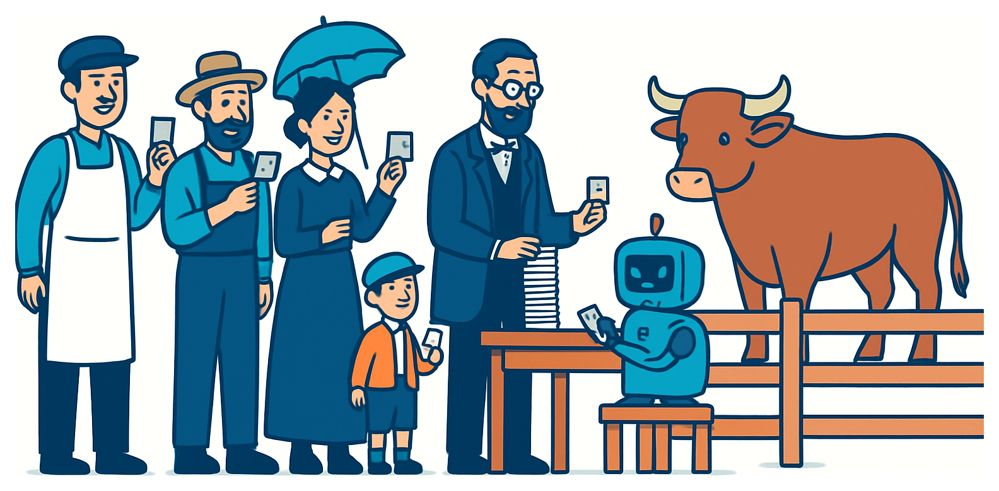

Learn models you can read — and why many trees beat one.
Merit Point Academy · 60 min · press S notes · → next · 💬 to comment
Recap · where we left off
Last class in 60 seconds
Categories, via probabilities
The sigmoid turns a score into P(class = 1); the threshold turns that into a decision.
The boundary is the model
A straight line through the feature space — move the threshold, the line slides.
Accuracy can lie
96% and zero pedestrians found. Report the confusion matrix.
Homework share: which threshold did you ship, and what did it cost you? Now notice what both models so far had in common — they draw one straight line and hope the world cooperates. Today's model doesn't draw lines at all. It asks questions.
Agenda · how this hour runs
Where we're going
0–8' Homework share + 787 people guess the weight of an ox
8–18' If-then trees: root, question, branch, leaf — and how a split gets chosen
18–26' One tree overfits — watch train and test come apart
26–34' Forests: why many mediocre voters beat one expert
34–42' Demos: print a tree's rules in Colab · the AI rule-reader
42–54' Two labs: pick the best question with Gini by hand · tree vs. forest, for real
54–60' Your rule-based model, homework & wrap-up
Quizzes & 💬 comments throughout
By the end: explain how a tree splits data, spot overfitting in one tree, and say why a forest beats it — with your own numbers.
Warm-up · activate
Quick check · tap an answer
"If it's a pedestrian AND closer than 10 metres, brake." Could a machine-learning model's entire logic look like that — readable, in plain language?
That's a decision tree — and the rules aren't written by a person, they're learned from data. Today you'll train one and print its logic in plain English. The catch, which arrives in about twenty minutes: the more readable the tree, the less accurate it usually is.
The Story
The crowd that guessed the ox
At a country fair in Plymouth in 1906, an ox was put on display and fairgoers paid sixpence to guess its weight. 787 legible tickets came in — butchers, farmers, and people who had never touched a cow. Francis Galton — the same Galton from Class 10 — collected every ticket expecting to prove the crowd was foolish. The middle guess was 1,207 lb. The ox weighed 1,198 lb. The crowd was off by 0.8%, and beat every individual expert in the room. Galton, to his credit, published it anyway.
Neural voice · click to play / pause

When statisticians later recomputed the mean of Galton's published guesses, it came to 1,197 lb — one pound under the true weight. That's the random forest in one anecdote: one tree is a single fairgoer; the forest is the crowd.
Concept 1 · the shape of the model
A model made of questions
A decision tree splits the data by asking one yes/no question about one feature at a time, until each group is pure enough to answer.
Root — all your rows, before any question
Internal node — a test on one feature: is distance ≤ 10 m?
Branch — the yes side and the no side
Leaf — no more questions: here is the answer
is distance_m ≤ 10?
├─ yes → BRAKE
└─ no → is rel_speed ≥ 55?
├─ yes → BRAKE
└─ no → GO
KEY IDEA — trees are interpretable. You can follow exactly why the model decided, in words, for any single row. No other model in this course lets you do that. Two side benefits: no scaling needed, and numbers and categories mix freely.
Concept 2 · how the tree picks its question
Purity: the tree's only goal
A good question leaves the two sides more pure — closer to all-one-answer — than the group it started with. Gini impurity is the score: 0.0 = perfectly pure, 0.5 = a coin flip.
Gini = 1 − Σ pi²
The tree tries every threshold on every feature, keeps the one with the biggest drop in impurity, and then does the whole thing again on each side. That's the entire algorithm.
Worked, on our 14 rows
Root: 8 BRAKE / 6 GO → Gini 0.490
Best question found: distance_m ≤ 10
→ left: 6 BRAKE / 0 GO · Gini 0.000 → right: 2 BRAKE / 6 GO · Gini 0.375
Weighted impurity after: 0.214 — a gain of 0.276
Note the tie. Two different questions score the same gain of 0.276 here — distance_m ≤ 10 and rel_speed_kmh ≤ 42.5. The tie-break is arbitrary, so add two rows and you can get a completely different tree. Remember that in twenty minutes.
Check · reading a split
Quick check · tap an answer
A node holds 20 rows: 10 BRAKE and 10 GO. A candidate question sends 10 rows left (10 BRAKE, 0 GO) and 10 rows right (0 BRAKE, 10 GO). What is the impurity after this split?
Gini of each side is 1 − 1² − 0² = 0, so the weighted impurity after the split is 0 too. The root was at 0.5 (a perfect coin flip), so this question gains the full 0.5 — the best split possible. Real data almost never offers one.
Concept 3 · watch it break
One tree keeps asking until it has memorised you
Nothing stops a tree from splitting until every leaf holds one row. At that point it is 100% accurate on the training set — and it has learned the noise along with the pattern.
Depth 3: test 0.806 — the sweet spot
Depth 10: train 1.000, test 0.778
The gap is the overfitting, measured
This is Class 3's warning and Class 10's train/test rule, finally visible as a picture instead of a principle.
Two fixes.Pruning — stop early (max_depth, min_samples_leaf) and accept a worse training score for a better real one. Or the better fix, which is the second half of this hour: don't build one tree.
Concept 4 · the wisdom of the crowd, formalised
Many mediocre voters beat one expert
A random forest trains hundreds of trees, each on a different random sample of the rows and a random subset of the features, then lets them vote.
Each tree is deliberately made different, and each is mediocre
Their errors point in different directions and cancel
What survives the averaging is the signal
Suppose each voter is right 60% of the time and votes independently. The chart shows the exact probability that the majority is right.
1 voter: 60%. 101 voters: 97.9%. That's Condorcet's jury theorem, and it's the ox at the fair. The catch — and it's a real one — is independence: real trees see overlapping data and correlate, so real forests gain much less than this chart promises. Ours went 0.778 → 0.861. Still free accuracy, for the price of readability.
Case study · our running example, explaining itself
Should the car brake?
The one AV decision where "the model said so" is not an acceptable answer to an investigator.
1
Featuresdistance_m, rel_speed_kmh, is_pedestrian
2
TreeIts branches read like driving logic
3
Read it"speed > 54.8 and distance ≤ 57.8 → BRAKE"
That third step is why this model still exists. After a crash, a regulator can print the tree and argue with a specific branch. A 200-tree forest scores better and can't be argued with — so safety-critical systems often ship the readable model on purpose, and keep the forest as the benchmark it has to nearly match.
Discuss · 5 minutes · write a rule
One rule you'd want a car to follow
Write a single if-then rule you'd want a self-driving car to obey. Then ask: could a tree learn it from data?
Make it measurable
Which columns does your rule need? If the car can't measure it, the tree can't split on it — "if the child looks like they might run" is not a feature.
Then break it
When would your rule be actively dangerous? Every rule has a situation it was never written for.
Pairs, 3 minutes — best rule and best counter-example in 💬.
Live demo 1
Print a model's mind in Colab
Fit a shallow tree, then print its logic in plain text. Three lines, and the model explains itself.
You ▸ tree = DecisionTreeClassifier(max_depth=3, random_state=0).fit(X_train, y_train)
You ▸ print(export_text(tree, feature_names=FEATURES, class_names=["GO", "BRAKE"]))
You ▸ plot_tree(tree, feature_names=FEATURES, class_names=["GO","BRAKE"], filled=True) # the picture version
You ▸ forest = RandomForestClassifier(n_estimators=200, random_state=0).fit(X_train, y_train)
You ▸ print(sorted(zip(FEATURES, forest.feature_importances_), key=lambda p: -p[1]))
No scikit-learn. Fourteen braking situations and a loop over every possible question — exactly what CART does, in about twenty lines you can read.
Python loads on first Run
▶ Run the code to see the output here.
Mira · 小析
Hi, I'm Mira · 小析, your AI teaching assistant. Edit the code and hit Run. Stuck? I can Explain, Debug, or Improve it — or just ask me below.
Hands-on lab 2 · the case study, for real
Watch one tree overfit — then let 200 of them vote
240 braking situations with realistic 8% label noise. Sweep the depth, read the tree's rules aloud, then see what a forest buys you.
Python loads on first Run
▶ Run the code to see the output here.
Mira · 小析
Hi, I'm Mira · 小析, your AI teaching assistant. Edit the code and hit Run. Stuck? I can Explain, Debug, or Improve it — or just ask me below.
Your project
Build a rule-based model
Train a tree you can read out loud, then a forest, and report what the readability cost you.
Pick a dataset with a category to predict — yours, or the braking data from Lab 2
Fit a DecisionTreeClassifier(max_depth=3) and print its rules
Fit a RandomForestClassifier
Compare both on the test set
Deliverable
A tree with its printed rules, plus a forest, and their accuracy comparison.
Success looks like
You can read one learned rule aloud as a sentence, and you report both scores — including when the forest wins.
Build it now · hands-on
Shallow first, then deep, then the crowd
Split train/test first — same discipline as Class 10, no exceptions
Fit max_depth=3 and print it with export_text — read one branch out loud to your neighbour
Sweep the depth: 1, 2, 3, 4, 6, 10, None. Record train AND test accuracy for each
Find where test accuracy stops improving — that's your tree's honest depth
Fit a RandomForestClassifier(n_estimators=200) and compare on the test set
One sentence: what did you give up to get the forest's extra accuracy?
Colabscikit-learnmatplotlibChatGPT / Claude
Instructor's tip: keep the tree at depth 3–4 while you're reading it. A depth-12 tree is technically printable and practically unreadable — which is exactly the trade-off this whole hour is about.
Benchmark · judge against this
What finished work looks like
🌳 The readable tree
Depth 3, printed, with one branch quoted in English: "speed above 54.8 km/h and distance under 57.8 m → BRAKE." Test accuracy 0.806.
📉 The overfitting evidence
A depth sweep showing train reaching 1.000 while test falls to 0.778 — your own numbers, not the slide's.
🌲 The forest, compared
200 trees → 0.861. Better, and you can no longer print why. Both numbers reported side by side.
The bar: a rule you can say out loud, a depth sweep that shows the gap opening, both models scored on the same held-out test set — and one sentence about the trade you made.
Reference · key terms
Today's vocabulary
Decision tree — a model made of nested yes/no questions about features; leaves hold the answers.
Gini impurity — how mixed a group's labels are. 0 = pure, 0.5 = a coin flip. The thing a split minimises.
Pruning / max_depth — stopping the tree early on purpose, trading training accuracy for real accuracy.
Ensemble — many models combined into one prediction. Bagging trains them in parallel on random samples and votes.
Random forest — bagging with trees, plus a random subset of features at each split, so the trees genuinely differ.
Interpretability — whether a human can follow why the model decided. Trees have it; forests trade it away.
Recommended homework
Before next class
Finish your rule-based model — printed depth-3 tree + forest + both test scores. Colab link in Google Classroom.
Quote one learned rule in plain English, and say whether you agree with it. Would you have written that rule yourself?
Run the depth sweep on your own data and report where test accuracy peaked — that number is different for everyone.
⭐ Stretch (optional)
Try GradientBoostingClassifier on the same split — the other family of ensemble, where trees are trained in sequence to fix each other's mistakes. Does it beat your forest?
Task 2 is the one that separates using a model from understanding one. A student who disagrees with a rule their own model learned — and can say why — has arrived somewhere real. Questions → 💬 on any slide.
Today's line to remember
"The result seems more creditable to the trustworthiness of a democratic judgment than might have been expected."
— Francis Galton, Vox Populi, Nature, 1907
He went looking for proof that crowds were foolish, found the opposite, and published it. A hundred years later we call it a random forest.
Wrap-up
Three things to keep
A tree splits data with if-then questions — and you can read every one
One deep tree memorises: train 1.000, test 0.778. The gap is the overfitting
A forest votes — more accurate, less readable. That trade is a choice you make
Exit ticket: write one rule you'd expect your own tree to learn. Post it in 💬.
Next · Class 13 — three more ways to classify the same thing: KNN, SVM, and your first neural network.
Backup material
Extra slides — if there's time
Deeper dives and extra practice. Skip in a tight hour; pull up on demand or for a longer session.
Bagging vs. boostingthe other way to ensemble
Trees that predict numbersregression trees
Bonus quizone more check
Backup · the other way to combine models
Bagging in parallel, boosting in sequence
Bagging (random forest)
Train many trees independently on random samples, then vote. Each tree is a full model; the crowd cancels their random errors. Reduces variance — the instability we watched in the tie-break.
Boosting (XGBoost, LightGBM)
Train trees one after another, each new one focused on the rows the previous ones got wrong. Reduces bias — and on messy tabular data it usually wins competitions outright.
Both are ensembles; they differ in whether the models are peers or a relay team. On the kind of spreadsheet data most research projects actually use, gradient boosting is frequently the strongest model available — and it is still, structurally, a pile of the little if-then trees you built tonight.
Backup · trees that predict numbers
The same idea, aimed back at Class 10
Classification tree
Leaves hold a class. Splits chosen to reduce Gini impurity — make each side more one-answer.
Regression tree
Leaves hold a number — the average of the rows that landed there. Splits chosen to reduce MSE — make each side more one-value.
Remember Class 10's extrapolation disaster, where a straight line confidently predicted −6.1 metres? A regression tree cannot do that: its prediction is always an average of rows it actually saw, so it never invents a value outside its training range. It has the opposite flaw — it can only ever predict values it has seen before, in flat steps.
Backup · bonus check
Quick check · tap an answer
Your decision tree scores 1.000 on training data and 0.62 on test. Your colleague suggests increasing max_depth so it "learns more." What actually happens?
A training score of 1.000 is not a sign of a good model; it is the signature of a memorised one. The fix runs the other way: reduce max_depth, raise min_samples_leaf, or replace the single tree with a forest. This is Class 3's overfitting warning in a tree's own vocabulary.